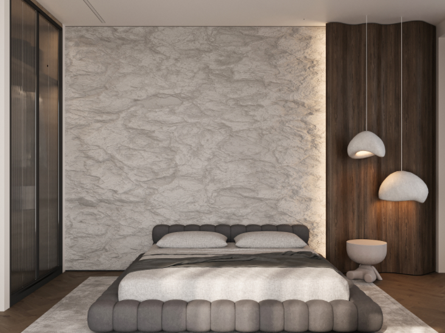
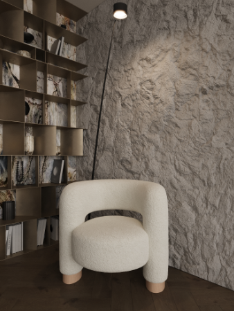

Interior Design
Since I was little i had a deep love for optics and design, I think i got that from my mother because she is an interior designer. When i was in 11th grade in High School i did an interior design course which lasted half an year, and i won best project in my group which gave me the opportunity to do an intership in a design company.
At the course i learned designing softwears as AutoCad and 3dSMax. Before enrolling into this course I underestimated the work that interior designers have to make in order to have good projects, it took a while to perfect my skills but I was surely very proud after I saw the finished Product. Here you can see some pictures from my final project.
 Fashion
Fashion has always fascinated me — not just as clothing, but as a form of self-expression. It`s a language without words, a way to show who we are, how we feel, and what we believe in. I love how trends evolve, how colors and cuts reflect the spirit of a generation, and how each person interprets style in their own unique way.
But fashion isn`t just about following what`s “in.” It`s about choosing what fits you — your body, your personality, your mood. That`s why I`m drawn to the digital side of fashion. My dream is to design fashion-related websites that celebrate individuality, creativity, and confidence. I want to build spaces where people can explore styles, discover inspiration, and feel empowered to define their own look.
Combining my love for fashion with my passion for design feels natural. I see websites as digital runways — places where style meets storytelling. And I can`t wait to bring that vision to life.